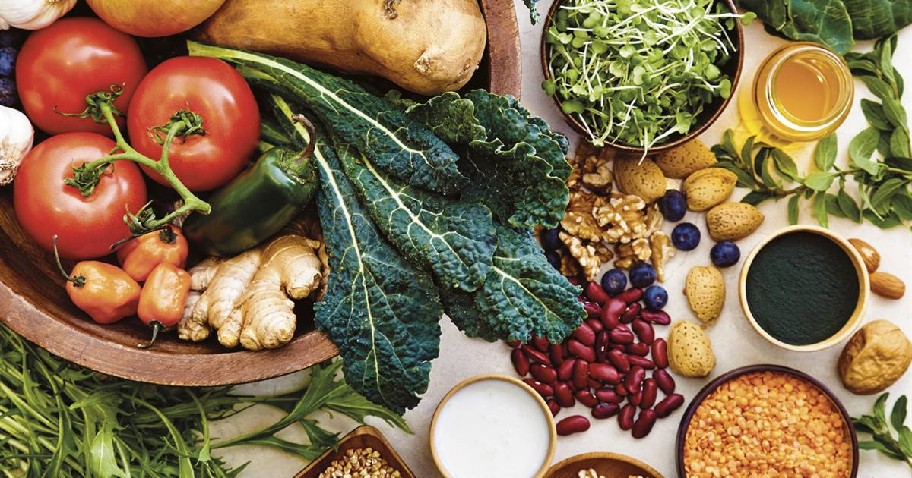

Frutas y verduras

Las frutas y verduras son bajas en calorías y densas en nutrientes, lo que significa que están llenas de vitaminas, minerales, antioxidantes y fibra. Concéntrese en comer la cantidad diaria recomendada de al menos cinco porciones de frutas y verduras y naturalmente lo llenará y lo ayudará a reducir el consumo de alimentos poco saludables.
Una porción es media taza de fruta o verdura cruda o una pequeña manzana o plátano, por ejemplo. La mayoría de nosotros necesitamos duplicar la cantidad que comemos actualmente.

Como mejorar el consumo de verduras
Podemos perder le gusto por las ensaladas simples y las verduras al vapor con el tiempo. Dales vida a las ensaladas verdes. Extenderse más allá de la lechuga.La col rizada, rúcula, espinaca, hojas de mostaza, brócoli y repollo chino están llenas de nutrientes. Para agregar sabor a sus verduras para ensalada, intente rociar con aceite de oliva, agregar un aderezo picante o espolvorear con rodajas de almendras, garbanzos, un poco de tocino, parmesano o queso de cabra.

Agrega color, las verduras de colores más brillantes y profundos no solo contienen concentraciones más altas de vitaminas, minerales y antioxidantes, sino que también pueden variar el sabor y hacer que las comidas sean más atractivas visualmente. Agregue color usando tomates frescos o secados al sol, zanahorias glaseadas o remolacha, gajos de repollo rojo asado, calabaza amarilla o pimientos dulces y coloridos.
Gusto por lo dulce.
Las verduras naturalmente dulces, como zanahorias, remolachas, batatas, ñame, cebollas, pimientos y calabazas, agregan dulzura a sus comidas y reducen sus antojos de azúcar agregada. Agréguelos a sopas, guisos o salsas para pasta para darle un toque dulce y satisfactorio.
Copyright © 2018 - All Rights Reserved - Domain Name
Template by OS Templates